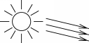
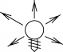
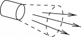

Light objects are used to define additional lights in the Amira viewer windows. Actually light objects are neither modules nor standard data objects. Nevertheless, they are displayed in the Pool. Like modules they provide some ports allowing the user to adjust the object's properties. In particular, three different light types are supported, namely directional lights, point lights, and spot lights. Lights can be define d in scene coordinates or in camera coordinates (camera slave mode). In order to interactively change the light parameters appropriate Open Inventor draggers can be activated.
Note that the Amira viewers define separate headlights by default. Light objects represent additional light sources and are not related to the viewer's head light. New lights can be interactively created using the View Lights menu of the Amira main window. This menu also allows activation of new light settings consisting of multiple lights. A light setting is stored as an Amira script in the subdirectory share/lights in the Amira installation directory. New settings can be added dynamically by copying new scripts into this directory.
This radio box determines the light type. Three different types are supported:
A directional light emits parallel light. It is faster to compute than the other lights. Another advantage is that it has no particular location (although the dragger used to edit the light is located somewhere). Therefore light settings consisting of directional lights only can be easily applied to new scenes, regardless of the actual size or position of the objects in that scene.

The second type is a point light. A point light is specified by its location only. It emits light symmetrically in all directions.

The third type is a spot light, which has a position like a point light, but which also defines cone restricting the shape of the light being emitted.

First, this port provides a color button indicating the color of the light. Pressing the button pops up the color dialog and lets you change the light's color.
The next toggle called camera slave specifies, whether the light remains fixed relative to the camera. If not, the light's position and direction are fixed with respect to other objects in the scene.
Finally, the last toggle called show dragger allows you to activate an Open Inventor dragger which can be used to move the light or to modify its direction.
Here the two additional parameters for spot lights are specified:
The cut off angle determines the spread of the cone of the emitted light, measured from one edge of the cone to another.
The drop off rate controls how concentrated the light is. The light's intensity is highest in the center of the cone. It's attenuated toward the edges of the cone. A value of 0 produces very sharp edges, A value of 1 produces very soft edges.
Inherits all commands of Object.
Returns the color of the light as an RGB tuple of floating point number.
Sets the color of the light. The color can be specified either as a tuple of three RGB integer values in the range 0...255, or as a tuple of three RGB floating point values in the range 0...1, or as a text string.
Returns the intensity of the light.
Sets the intensity of the light. The intensity modulates the light's color. Instead of modifying the light's intensity the brightness of the light's color could be changed as well.
Returns the direction of the light (undefined for a point light).
Sets the direction of the light. Has no effect for a point light.
Returns the location of the light. For a directional light the location of the associated light dragger is returned.
Sets the location of the light. For a directional light the location of the associated light dragger is set.